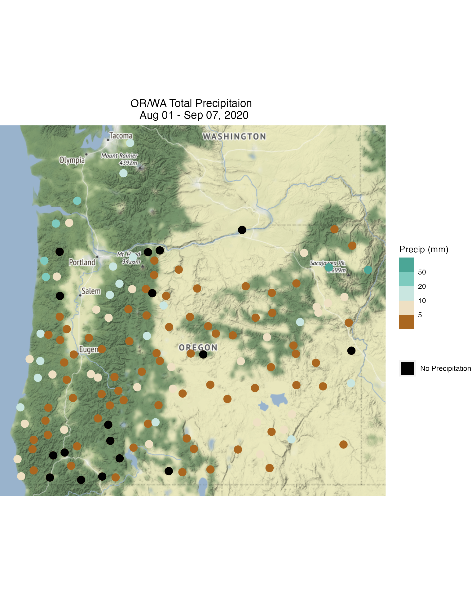

vignettes/articles/ORWA_2020_Water_Deficit.Rmd
ORWA_2020_Water_Deficit.RmdThe purpose of this article is to serve as a guide for ingesting and working with RAWS data and to present this data with a map. For this example, we will look at cumulative precipitation across Washington and Oregon between August 1st and September 7th.
First, we will use RAWSmet’s wrcc_loadMeta() function to gather the appropriate metadata and for the RAWS stations in Oregon and Washington. Additionally, we must set the directory that stores RAWS data by using setRawsDataDir().
RAWSmet functions will save any data downloaded by wrcc_load~() or fw13_load~() functions to this directory and will retrieve it if requested again.
library(RAWSmet) setRawsDataDir("~/Data/RAWS") # Load state level metadata wa_meta <- wrcc_loadMeta("WA") or_meta <- wrcc_loadMeta("OR") # Take a look at the structure of this metadata head(wa_meta)
## # A tibble: 6 x 11
## nwsID wrccID nessID siteName longitude latitude timezone elevation countryCode
## <chr> <chr> <chr> <chr> <dbl> <dbl> <chr> <dbl> <chr>
## 1 4520… waBC83 32627… 83 Monu… -121. 49.0 America… 1979 US
## 2 4512… waWABE 3000B… Abernat… -123. 46.4 America… 884 US
## 3 4520… waWAEN 30074… Aeneas -120. 48.7 America… 1580 US
## 4 4538… waWALD 3245E… Alder R… -117. 46.3 America… 1372 US
## 5 <NA> waWARC <NA> Arcadia… -117. 47.9 America… 625 US
## 6 4518… waWASH FA618… Ashford -122. 46.8 America… 433 US
## # … with 2 more variables: stateCode <chr>, agency <chr>Just to double check that we are accessing the correct stations, we can easily plot them on a map with raws_leaflet().
orwa_meta <- or_meta %>% rbind(wa_meta) raws_leaflet(orwa_meta)
wrcc_loadYear() function may be used to gather yearly data for a specific station. This function will create a raws_timeseries object with meta and data dataframes storing different information. The meta dataframe stores the metadata for this specific station and the data dataframe will contain hourly observations from this station.
For this example, however, we will use the wrapper function, wrcc_loadMultiple(). This function will load multiple raws_timeseries objects into a list of type raws_list.
In order for the following code to run properly on a local machine, one must provide a valid password used for accessing RAWS data.
# Load all stations in Oregon orList <- # Load data wrcc_loadMultiple( wrccIDs = or_meta$wrccID, meta = or_meta, year = 2020, newDownload = FALSE, password = MY_PASSWORD ) # Load all stations in Washington waList <- # Load data wrcc_loadMultiple( wrccIDs = wa_meta$wrccID, meta = wa_meta, year = 2020, newDownload = FALSE, password = MY_PASSWORD )
Next we will filter this raws_list to contain only the observations between the time range of interest: August 1st to September 7th.
orList <- orList %>% # Filter to the desired time range rawsList_filterDate( startdate = 20200801, enddate = 20200907, timezone = "America/Los_Angeles" ) %>% # Remove any stations with no data rawsList_removeEmpty() waList <- waList %>% # Filter to the desired time range rawsList_filterDate( startdate = 20200801, enddate = 20200907, timezone = "America/Los_Angeles" ) %>% # Remove any stations with no data rawsList_removeEmpty()
To calculate the cumulative precipitation for each station, we will convert these two raws_lists to a tidy rawsDF. This is a single dataframe where each row represents an hourly measurement. The difference between this and the data dataframe of a raws_timeseries object is that each observation is stored with its associated station metadata.
# Create tidy dataframes orDF <- orList %>% lapply(raws_toRawsDF) %>% dplyr::bind_rows() waDF <- waList %>% lapply(raws_toRawsDF) %>% dplyr::bind_rows() # Remove an erroneous observation waDF <- waDF %>% dplyr::mutate(precipitation = replace(precipitation, precipitation > 5000, 0)) # Combine tidy dataframes orwaDF <- orDF %>% dplyr::bind_rows(waDF) names(orwaDF)
## [1] "datetime" "temperature" "humidity" "windSpeed"
## [5] "windDirection" "maxGustSpeed" "maxGustDirection" "precipitation"
## [9] "solarRadiation" "fuelMoisture" "fuelTemperature" "monitorType"
## [13] "nwsID" "wrccID" "siteName" "longitude"
## [17] "latitude" "elevation"Now that we have the data in a single dataframe, we can calculate the cumulative precipitation.
# Find the cumulative precipitation. at each site plotDF <- orwaDF %>% dplyr::group_by(wrccID) %>% dplyr::mutate( total_precip = cumsum(precipitation) ) %>% dplyr::slice_max(datetime, with_ties = FALSE) %>% dplyr::ungroup() %>% dplyr::select(datetime, wrccID, longitude, latitude, total_precip) # # Set precipitation values equal to zero to NA # # This is important for when we plot the data # plotDF <- plotDF %>% # dplyr::mutate(total_precip = replace(total_precip, total_precip == 0, NA)) zeroPrecipDF <- plotDF %>% dplyr::filter(total_precip == 0) head(plotDF)
## # A tibble: 6 x 5
## datetime wrccID longitude latitude total_precip
## <dttm> <chr> <dbl> <dbl> <dbl>
## 1 2020-09-07 06:00:00 orOAGN -124. 42.6 0.800
## 2 2020-09-07 05:00:00 orOALK -117. 44.1 0
## 3 2020-09-07 06:00:00 orOALL -120. 43.9 7.70
## 4 2020-09-07 06:00:00 orOANT -118. 44.0 3.05
## 5 2020-09-07 06:00:00 orOBAD -120. 44.0 0
## 6 2020-09-07 06:00:00 orOBAL -118. 43.6 2.7Now plotDF contains all of the information we need to create a map of cumulative precipitation across Washington and Oregon. The following code will illustrate how this map is generated.
library(ggmap) library(ggplot2) # 5 bins (one per ',') breaks = c(-Inf, 5, 10, 20, 50, Inf) # 5 colors colors <- RColorBrewer::brewer.pal(5, "BrBG") # 5 color positions [0-1] values <- c(.005, .01, .02, .05, 1) gg <- # Create an empty map ggmap::qmplot( longitude, latitude, data = plotDF, geom = "blank", zoom = 7, maptype = "terrain-background" ) + # Add points at each station where the color is based on 'total_precip' geom_point(aes(color = total_precip), alpha = 1, size = 4) + scale_color_stepsn( name = "Precip (mm)", breaks = breaks, colors = colors, values = values, guide = guide_colorsteps(order = 1) ) + # Add points with zero precipitation in black geom_point( data = zeroPrecipDF, color = 'black', alpha = 1, size = 4, mapping = aes(fill = "No Precipitation") ) + # Add a second legend for "No precipitation" black dots guides(fill = guide_legend("", override.aes = list(shape = 15, size = 7), order = 2)) + # Add a title. ggtitle( label = "OR/WA Total Precipitaion \n Aug 01 - Sep 07, 2020" ) + # Theme with centered title theme(plot.title = element_text(hjust = 0.5)) print(gg)
